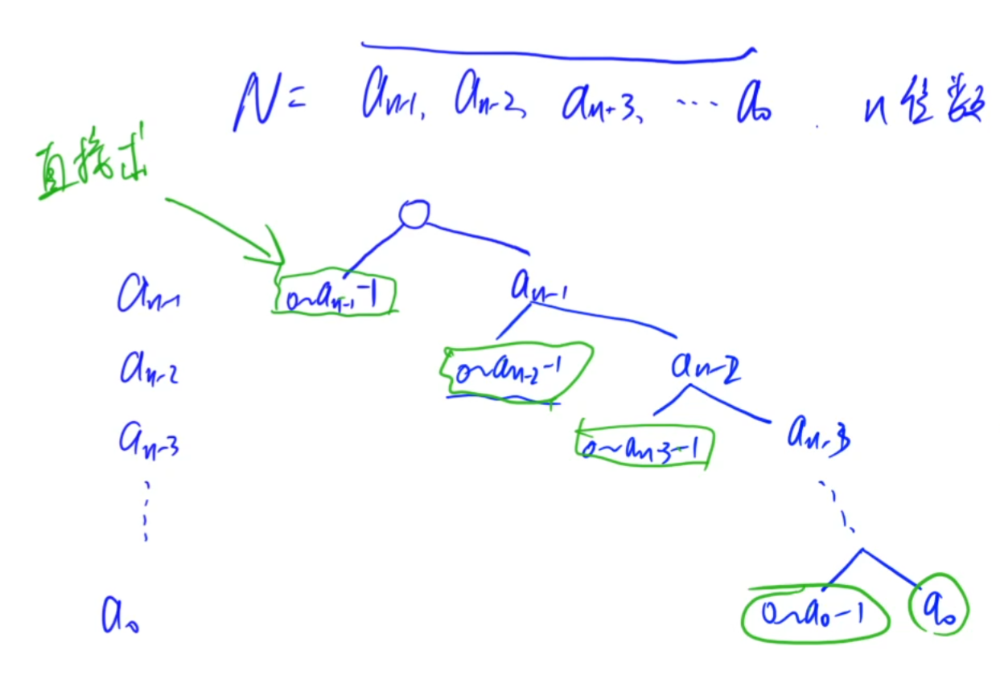
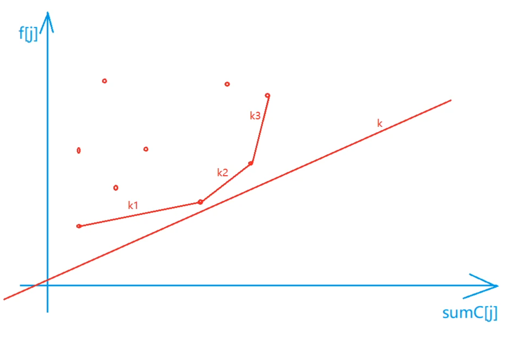

动态规划
拓扑序
背包问题
01背包
完全背包
多重背包
分组背包
二维费用背包
集合：只从前i个物品中选，花费1不超过j，花费2不超过k的选法
状态计算：f[i][j][k] = max(f[i-1][j][k], f[i-1][j-v1[i]][k-v2[i]] + w[i][k])
三种不同划分的比较
以选法为例，最大值最小值同理
集合：恰好是k的选法
f[0]=1,f[k≠0]不存在，此处为0
集合：至少是k的选法
f[0]=1,f[k≠0]不存在，此处为0，且k为负数时合法，视为0
集合：不超过k的选法
f[k]=1
线性DP
数字三角形：从顶点出发到i,j的最大路径和
方格取数：所有从顶点出发走到(i1,k-i1)(i2,k-i2)的路径
按照两次路径的来自方向可分为四类
最长上升子序列
集合：所有以第i个数结尾的上升子序列
怪盗基德的滑翔翼：
所有上升子序列和下降子序列
最长公共子序列
集合：所有在第一个序列的前i个字母中，第二个序列的前j个字母中出现的子序列
按照第i，j个字母是否出现可分为四类
其中，i不出现j出现这一情况可用f[i-1,j]表示，虽然这个表示并不保证j一定出现，但不影响结果，i出现j不出现同理
i，j都不出现被包含于上述两种，i，j都出现时（即要求相等）时有f[i-1][j-1]+1
从而状态转移方程为：f[i][j] = max(f[i-1][j],f[i][j-1],f[i-1][j-1]+1)
最长公共上升子序列
集合：所有在第一个序列的前i个字母中，第二个序列的前j个字母中出现，且以b[j]结尾的公共上升子序列
按a[i]是否出现分为两类，a[i]不出现时即为f[i-1,j]
a[i]出现时(a[i]=b[j])，按照上一个元素为k=b[1...j-1]分为若干类，为f[i-1,k]+1
区间DP
石子合并
集合：将第i堆石子到第j堆石子合并成一堆石子的合并方式
f[i][j] = min(f[i,k]f[k+1,j]+s[i,j])
环形石子合并
可将题目看作在相邻的石子中连边，一共连n-1条边，根据“缺口”位置在石子合并的基础上再多一重循环 O(n^4)
要求的是n条长度为n的链上的最小值，可以发现将链重复两边，可以在这条长度为2n的链上找到所有上述的链
状态压缩DP
蒙特里安的梦想
只枚举横向摆放的情况
f[i,j]对应第i列，被上一列伸出状况以二进制数j表示
与f[i-1,k]应满足 j&k=0 j|k不存在连续奇数个零
f[0,0]=1
答案为f[m,0]
最短Hamilton路径
集合：所有从0走到j，经过的点为二进制表示i的路径
小国王
集合：只摆在前i行，摆了j个国王，第i行摆放状态是k的集合
转移：f[i][j][a]是所有满足a&b==0和a|b没有相邻的1的bf[i-1][j-count(a)][b]的和
玉米田
集合：只摆在前i行，第i行摆放状态是j的集合
转移：f[i][a]是所有满足a&b==0和a，b都没有相邻的1的bf[i-1][j-count(a)][b]的和
炮兵阵地
集合：只摆在前i行，第i-1行摆放状态是j，第i行摆放状态是k的集合
转移：f[i][a][b]是所有满足a,b,c在相同位上不同时有1且a,b相邻3位上至多只有一个1的f[i-1][c][a]+b中1的个数 的最大值
树形DP
没有上司的舞会
集合：所有以u为根的树中选择，选和不选u的方案
有依赖的背包问题
集合：所有以u为根的树中选择，体积不超过j的方案
树的最长路径
dfs从子节点更新到父节点，以该节点为根且从不同子节点出发的最长和次长的路径，是该节点向下的路径
树的中心
dfs从子节点更新到父节点，以该节点为根且从不同子节点出发的最长和次长的路径，是该节点向下的路径
再dfs从父节点更新到子节点，子节点的向上路径是父节点向上或向下（向下不能是该子节点）的最大路径加上子节点到父节点的路径
二叉苹果树
有依赖的背包问题
f[i][j]以i为根的树中选j条边的最大价值
战略游戏
类似没有上司的舞会
集合：以i为根的树中，点i选或不选的所有选法
f[i][0]=f[s1][1]+…
f[i][1]=1+min(f[s1][0],f[s1][1])+…
皇宫看守
集合：以i为根的树中，点i状态为j的所有选法
被父节点看到f[i][0]=Σmin(f[j][1],f[j][2])
被子节点看到 任选一个子节点为状态2，其余min(f[j][1],f[j][2]) 所有这样的最小值
自己f[i][2]=Σmin(f[j][0],f[j][1],f[j][2])+w[i]
数位DP
一般用前缀的方式计算，注意自己定义的是0-n中还是1-n中
计数问题
计算0-n中每个数字x在每个位上的出现次数（能构造出多少个数在某位上有x）
将n的数位分为三部分l mid r
先枚举l部分小于l的数
当计算0时，l部分须大于等于1，当计算非0时，l部分可以为0。然后r部分可以任取
再计算r部分时（即枚举l部分等于l的数）（l=0且x=0时不计算，不存在这种有前导0的数），若mid=x，则r部分可以取0-r，若mid>x，则r部分任取

度的数量
即求0~n中有多少数是b进制表示下只含有k个1，其余皆为0的数
从高位往下看，若该位大于1，则可以取遍0到全是1的情况（可以直接计算出），直接break，若等于1，则有两种选择，一种该位置为0，在剩下的数中放1（可以直接计算出）。一种该位置为1，剩下的数中能放的1减少。最后记得处理1枚举完的情况
数字游戏
求不降数数量
取0-an-1-1时，用动态规划求出
取an-1时，保证比上一位不降
集合：最高位为j，且共有i位的不降数
f[i][j]=Σf[i-1][k](k>=j)
Windy数
注意(0)137不会被计算到f[4][0]，含前导零的情况要额外加一遍
或者说，设该数共n位，最高位取0的情况（1-99999999（n-1 个九））实际上是Σf[1~n-1][0~9]
恨七不成妻
T[i][j][a][b]i位数，最高位为j，该数模7余a，各位数字模7余b
T[i][j][a][b]由T[i-1][k][a-j*10^(i-1)][b-j]转移
记忆化搜索
滑雪
集合：所有从(i,j)开始滑的路径
状态机模型
集合：所有从前i个物品中选，状态为j的方案
大盗阿福
| 结点 | 可转移到 |
|---|---|
| 偷窃 | 不偷窃 |
| 不偷窃 | 不偷窃，偷窃 |
股票买卖IV
f[i][j][0]：第i天，已经进行完j次交易
f[i][j][1]：第i天，正在进行第j次交易
状态转移方程是：
f[i][j][0] = max(f[i-1][j][0], f[i-1][j][1]+w[i])
f[i][j][1] =max(f[i-1][j][1], f[i-1][j-1][0]-w[i])
| 结点 | 可转移到 |
|---|---|
| 持有 | 不持有，持有 |
| 不持有 | 不持有，持有 |
股票买卖V
| 结点 | 可转移到 |
|---|---|
| 持有 | 不持有的第一天，持有 |
| 不持有的第一天 | 不持有的第二天及之后 |
| 不持有的第二天及之后 | 不持有的第二天及之后，持有 |
f[i][0]=max(f[i-1][0],f[i-1][2]-w)
f[i][1]=f[i-1][0]+w
f[i][2]=max(f[i-1][1],f[i-1][2])
设计密码
集合：密码串的前i个字母的最后j个字母和模板串前j个字母匹配的方案
转移：f[i+1][u]=f[i][j1]+f[i][j2]+…
密码串的第i+1个字母选择a~z导致j转移到不同的u
f[0][0]=1 答案为f[n][0]+…+f[n][m-1]
单调队列优化
最大子序和
将问题分类为以序列中哪个元素为结尾的序列
引入前缀和后问题即为求s[k]-s[k-j] (1<=j<=m)的最大值，滑动窗口解决
旅行问题
环拉成链
记录每两个相邻点的油量与距离之差，则题意为所有前区间和大于等于0，也即所有长度为环的长度的窗口中区间和最小值大于等于0
顺时针下ii+n-1中最小为j，需满足i，需满足s[j]-s[i-1]>=0，逆时针下i-n+1s[j]-s[i+1]>=0
烽火传递
集合：1-i合法，且点燃第i个烽火台的方案
f[i]=min(f[j])+w[i] i-m<=j<i
绿色通道
二分，寻找满足时间不超过t的最长空题段 的最小值
最长空题段是上一题中的每多少个烽火台至少有一个烽火台的限制，时间是代价
f[i]=min(f[j])+w[i] i-limit-1<=j<i
修剪草坪
集合：从前i头牛中选的方案
由于不能连续选k个，根据在哪个牛不选来分类
f[i]=max(f[i-1],f[i-x-1]+s[i]-s[i-x]) 1<=x<=k i-k<=i-x<i
代表不选i-x牛，选i-x到i中的牛
单调队列计算使f[i-x-1]-s[i-x]最大的i-x
考虑x=i时，代表前i头中全选，应视f[i-x-1]为0
理想的正方形
对每行求滑动窗口，再对每列求
斜率优化
任务安排1，2
将启动时间对所有后续任务影响特殊处理
集合：前i个任务的方案
f[i]=min(f[j]+sumt[i]* (sumc[i]-sumc[j])+s*(sumc[n]-sumc[j]))j<i
斜率优化
f[j]=(sumt[i]+s)*sumc[j]+f[i]-sumt[i] *sumc[i]-s *sumc[n]
对于任意给定的i，视f[j]为y，sumc[j]为x，则斜率与j无关为定值且为非正无穷正数，取不同的x确定不同的f[i]
通过图像观察可知，只保留“凸包”上的点，找到第一个斜率大于k的点
在本题中，随着i递增，x递增，在插入的时候可以删除队尾不在凸包上的点，（待查询的）k也递增，因此查询的时候可以删除队头小于查询值的点

任务安排3
本题中斜率不是单调递增，只能二分查找
运输小猫
接到猫的最早时间是t[i]-d[i]，记作a[i]
人为将猫最早时间排序 接走i~j猫的最早时间为a[j]，等待时间为(j-i+1)*a[j]-s[j]+s[i-1]
f[j][i] j个饲养员，取前i只小猫的最小花费
f[j][i]=min(f[j-1][k]+a[i]*(i-k)-s[i]+s[k])
f[j-1][k]+s[k]=a[i]* k+f[j][i]-a[i]*i+s[i]
对任意给定i，视f[j-1][k]+s[k]为y，k为x，a[i]递增